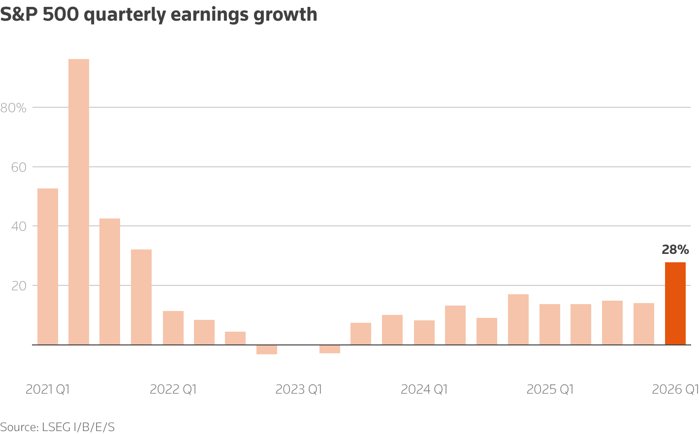

End in sight?
In Asia, South Korea's KOSPI surpassed the 7,000 mark for the first time as a semiconductor stock rally saw Samsung Electronics surge 12% to join the trillion-dollar stock club.
U.S. stocks also touched fresh records on Tuesday. Intel jumped 13% on reports that it was in talks with Apple to produce the main processors for its devices, while AMD leapt 16% in extended trading after becoming the latest chipmaker to boost its demand forecasts.
Today's key chart

Graphics are produced by Reuters.
S&P 500 companies are now on track to post aggregate earnings growth of 28% year-over-year for the first quarter, the strongest quarterly profit growth since 2021, according to LSEG research. The estimate stood at just 14% a month ago. Full-year 2026 earnings growth forecasts are now 23%, up from 17% at the start of this year.